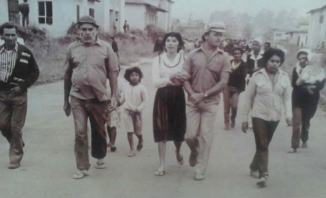

Este bairro nasceu de gente que não esperou ninguém fazer por ela. Agora a gente quer te ouvir.
O que você disser ajuda o comitê a decidir o que fazer no bairro, e o resultado volta para todo mundo.
São poucas perguntas, uns 4 minutos. Você pode tocar nas respostas ou falar no microfone. Dá para ouvir cada pergunta em voz alta.
Quem faz: o Comitê pela Democracia do Centre Ville, grupo de moradores que também faz atividades políticas. Isto é uma escuta voluntária para entender o bairro e planejar ações. Não é pesquisa eleitoral.